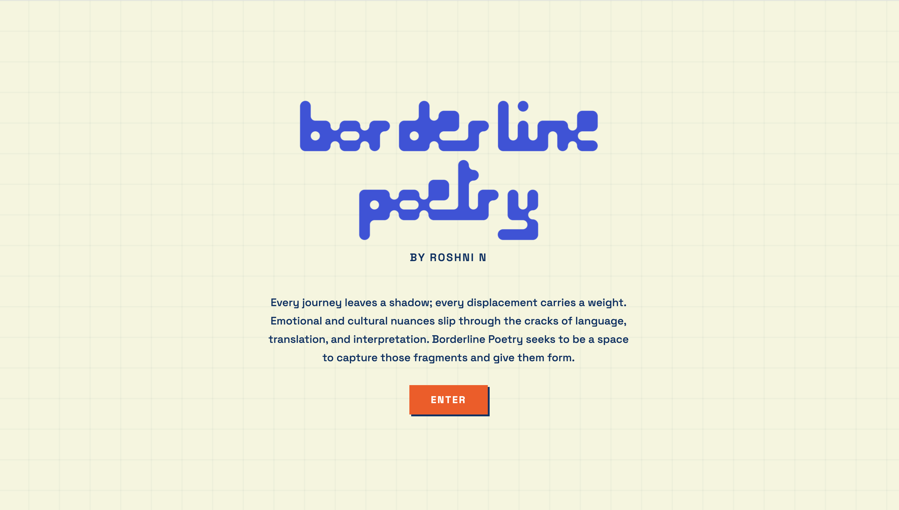
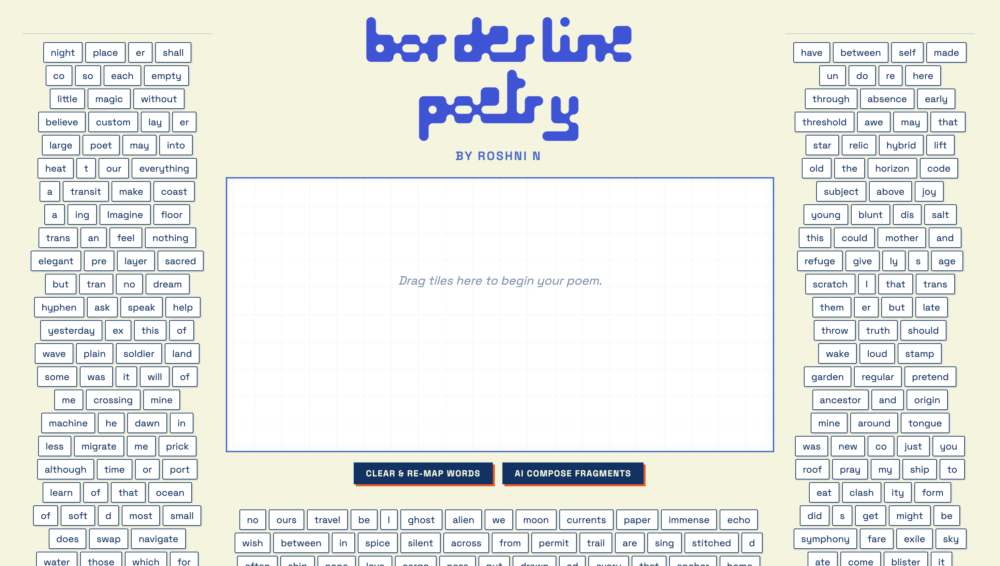

01. Borderline Poetry
LIVE ON VERCELBorderline Poetry was created as a response to the nuanced feelings of migration, displacement, cultural hybridity, and shifting identity—complexities that many find difficult to express through traditional prose. Inspired by the famous "Magnetic Poetry Kit," Borderline Poetry allows users to experiment with digital word tiles, providing a space for the freeform expression of identity and belonging.


Technical Specification
- [01] Frontend: Responsive UI (HTML5, CSS3, JS)
- [02] Backend: Next.js Serverless (Node.js)
- [03] AI Integration: OpenAI GPT-4o-mini API
- [04] Data Architecture: Custom-curated CSV linguistic dataset